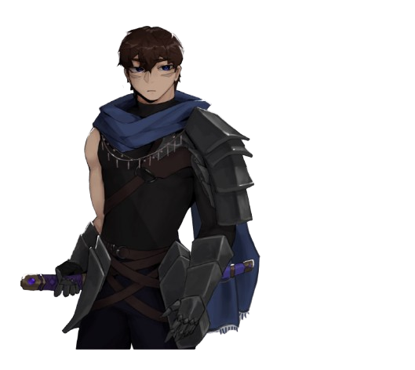

Echoes of Underworld é um jogo que será inicialmente desenvolvido para
dispositivos ‘mobile’ com a intenção de ser algo fácil e viciante para um público que busca bons
personagens e ambientação criativa.
Trazendo uma temática antiga em um contexto novo, ‘EoU’ promete uma
narrativa fácil de se entender, possibilitando que o jogador foque por completo em uma gameplay
divertida e descomplicada, mesmo que trazendo diversas opções de personalização.
First slide label
Some representative placeholder content for the first slide.
Second slide label
Some representative placeholder content for the second slide.
Third slide label
Some representative placeholder content for the third slide.
}
DEMONSTRAÇÃO
Personagens Jogáveis

Some quick example text to build on the card title and make up the bulk of the
card’s content.